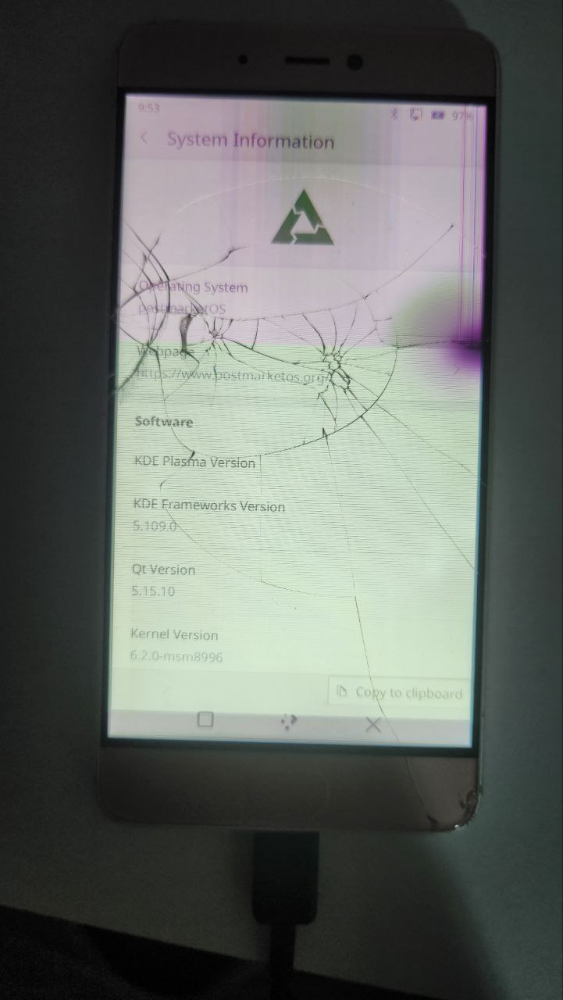

Xiaomi Mi 5s (xiaomi-capricorn)
|
 Xiaomi Mi 5S Running PMOS | |
| Manufacturer | Xiaomi |
|---|---|
| Name | Mi 5S |
| Codename | capricorn |
| Released | 2016 |
| Category | testing |
| Original software | Android |
| Original version | 6.0 |
| Extended version | 7.0 |
| postmarketOS kernel | 6.2.0 |
| Hardware | |
| Chipset | Qualcomm Snapdragon 821 (MSM8996Pro) |
| CPU | Quad-core (2x2.15 GHz Kryo & 2x1.6 GHz Kryo) |
| GPU | Adreno 530 |
| Display | 5.15 inch 1080p |
| Storage | 64 GB / 128 GB |
| Memory | 3 GB / 4 GB |
| Architecture | aarch64 |
| Type | handset |
| Unixbench Whet/Dhry score | 0.0 |
{kind=link}
| USB Networking |
Partial
|
|---|---|
| Flashing |
Works
|
| Touchscreen |
Works
|
| Display |
Works
|
| WiFi |
Works
|
| FDE | |
| Mainline |
Works
|
| Battery |
Works
|
| 3D Acceleration | |
| Audio | |
| Bluetooth |
Works
|
| Camera | |
| GPS | |
| Mobile data | |
| SMS | |
| Calls | |
| USB OTG | |
| NFC | |
| Accelerometer | |
|---|---|
| Magnetometer | |
| Ambient Light | |
| Proximity | |
| Hall Effect | |
| Barometer | |
| Power Sensor | |
| Camera Flash | |
|---|---|
| Keyboard |
Unavailable
|
| Touchpad |
Unavailable
|
| USB-A | |
| HDMI/DP | |
| Ir TX | |
| Ir RX | |
| Stylus | |
| Haptics | |
| Ethernet | |
| FOSS bootloader | |
Contributors
- Furkan Sonkaya (sepkov)
Users owning this device
- Sepkov (Notes: 64GB Storage, 3GB Memory, Screen died mid project)
How to enter flash mode
Hold Power + Volume Down while the phone is turned off. This will make the phone boot into fastboot mode Hold Power + Volume Up while the phone is turned off. This will make the phone boot into reboot mode
Installation
You will need to unlock the bootloader in order to be able to flash anything onto the phone.
Installing TWRP before doing anything else is recommended, as it makes dealing with the phone easier later on, and allows for quick restoration by taking backups of /system and /boot, then flashing them back in order to restore the device to its original state. Note that this method has only been tested with LineageOS, and running its installation ZIP in TWRP after restoring the backup was necessary to get it to boot, otherwise it would just keep loading forever.
| NOTE: Flashing to the system and boot partitions will wipe the Android core but will leave all apps and user files. If you want to be able to easily restore Android, it is recommended to backup both partitions using the method above. |
| WARNING: Flashing to the data partition will erase all user data! Make sure all important files are backed up before flashing. |
$ pmbootstrap init
$ pmbootstrap install
Manual Build
To build your own image, follow the pmbootstrap article.
Once you reach the flashing step:
- Flash the rootfs:
$ pmbootstrap flasher flash_rootfs
NOTE: If you need more space in the rootfs, you can also flash to the data partition by appending --partition data to this command. More information about the partitions can be found in the prebuilt images section above. |
- Flash the kernel and initramfs to the boot partition:
$ pmbootstrap flasher flash_kernel
You can also avoid flashing them and instead, boot the kernel directly:
$ pmbootstrap flasher boot
Mainline
MSM8996 common mainline kernel fork There is none currently.
Known issues:
- The display comes up black after initialization, works correctly after a reboot.
See also
Currently device is failing to give ip to the usb connected computer. Under linux you can use these commands to assign ip and connect to ssh. Replace X with your usb device. To list all network adapters:
$ ip a
And to change the ip address:
$ sudo ip addr add 172.16.42.2/24 dev usbX $ sudo ip link set usbX up